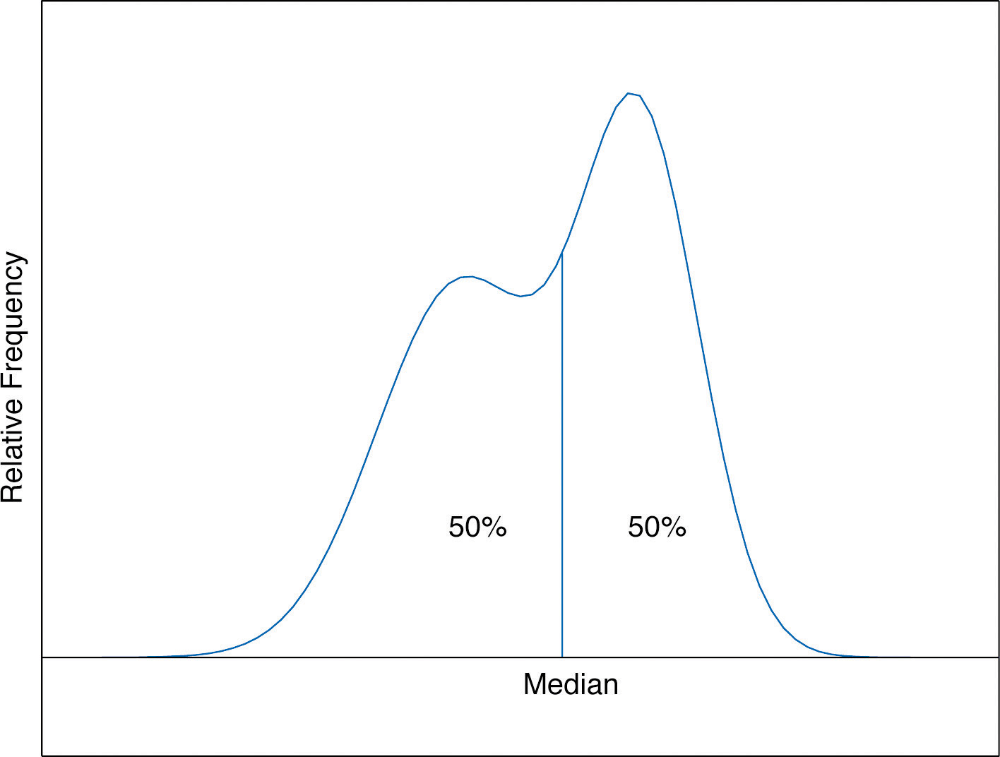
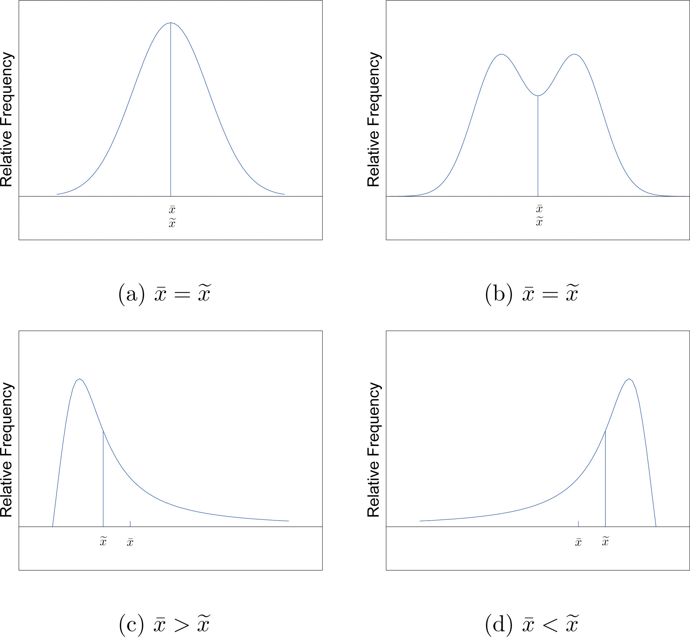
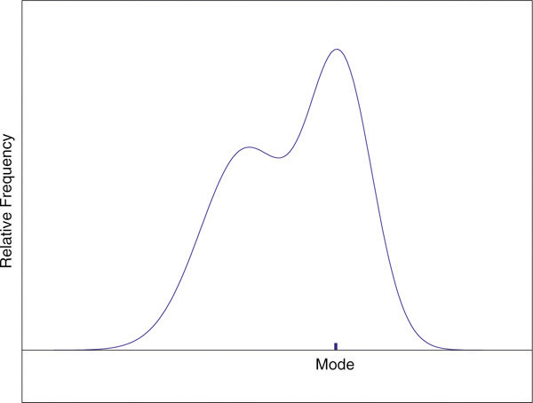

This section could be titled “three kinds of averages of a data set.” Any kind of “average” is meant to be an answer to the question “Where do the data center?” It is thus a measure of the central location of the data set. We will see that the nature of the data set, as indicated by a relative frequency histogram, will determine what constitutes a good answer. Different shapes of the histogram call for different measures of central location.
The first measure of central location is the usual “average” that is familiar to everyone. In the formula in the following definition we introduce the standard summation notation Σ, where Σ is the capital Greek letter sigma. In general, the notation Σ followed by a second mathematical symbol means to add up all the values that the second symbol can take in the context of the problem. Here is an example to illustrate this.
Find , , and for the data set
Solution:
In the definition we follow the convention of using lowercase n to denote the number of measurements in a sample, which is called the sample size.
The sample meanThe familiar average of a sample data set. of a set of n sample data is the number defined by the formula
Find the mean of the sample data
Solution:
A random sample of ten students is taken from the student body of a college and their GPAs are recorded as follows.
Find the sample mean.
Solution:
A random sample of 19 women beyond child-bearing age gave the following data, where x is the number of children and f is the frequency of that value, the number of times it occurred in the data set.
Find the sample mean.
Solution:
In this example the data are presented by means of a data frequency table, introduced in Chapter 1 "Introduction". Each number in the first line of the table is a number that appears in the data set; the number below it is how many times it occurs. Thus the value 0 is observed three times, that is, three of the measurements in the data set are 0, the value 1 is observed six times, and so on. In the context of the problem this means that three women in the sample have had no children, six have had exactly one child, and so on. The explicit list of all the observations in this data set is therefore
The sample size can be read directly from the table, without first listing the entire data set, as the sum of the frequencies: The sample mean can be computed directly from the table as well:
In the examples above the data sets were described as samples. Therefore the means were sample means, denoted by If the data come from a census, so that there is a measurement for every element of the population, then the mean is calculated by exactly the same process of summing all the measurements and dividing by how many of them there are, but it is now the population mean and is denoted by μ, the lower case Greek letter mu.
The population meanThe familiar average of a population data set. of a set of N population data is the number μ defined by the formula
The mean of two numbers is the number that is halfway between them. For example, the average of the numbers 5 and 17 is (5 + 17) ∕ 2 = 11, which is 6 units above 5 and 6 units below 17. In this sense the average 11 is the “center” of the data set {5,17}. For larger data sets the mean can similarly be regarded as the “center” of the data.
To see why another concept of average is needed, consider the following situation. Suppose we are interested in the average yearly income of employees at a large corporation. We take a random sample of seven employees, obtaining the sample data (rounded to the nearest hundred dollars, and expressed in thousands of dollars).
The mean (rounded to one decimal place) is , but the statement “the average income of employees at this corporation is $47,400” is surely misleading. It is approximately twice what six of the seven employees in the sample make and is nowhere near what any of them makes. It is easy to see what went wrong: the presence of the one executive in the sample, whose salary is so large compared to everyone else’s, caused the numerator in the formula for the sample mean to be far too large, pulling the mean far to the right of where we think that the average “ought” to be, namely around $24,000 or $25,000. The number 192.5 in our data set is called an outlier, a number that is far removed from most or all of the remaining measurements. Many times an outlier is the result of some sort of error, but not always, as is the case here. We would get a better measure of the “center” of the data if we were to arrange the data in numerical order,
then select the middle number in the list, in this case 24.6. The result is called the median of the data set, and has the property that roughly half of the measurements are larger than it is, and roughly half are smaller. In this sense it locates the center of the data. If there are an even number of measurements in the data set, then there will be two middle elements when all are lined up in order, so we take the mean of the middle two as the median. Thus we have the following definition.
The sample medianThe middle value when data are listed in numerical order. of a set of sample data for which there are an odd number of measurements is the middle measurement when the data are arranged in numerical order. The sample median of a set of sample data for which there are an even number of measurements is the mean of the two middle measurements when the data are arranged in numerical order.
The population median is defined in a similar way, but we will not have occasion to refer to it again in this text.
The median is a value that divides the observations in a data set so that 50% of the data are on its left and the other 50% on its right. In accordance with Figure 2.6 "A Very Fine Relative Frequency Histogram", therefore, in the curve that represents the distribution of the data, a vertical line drawn at the median divides the area in two, area 0.5 (50% of the total area 1) to the left and area 0.5 (50% of the total area 1) to the right, as shown in Figure 2.7 "The Median". In our income example the median, $24,600, clearly gave a much better measure of the middle of the data set than did the mean $47,400. This is typical for situations in which the distribution is skewed. (Skewness and symmetry of distributions are discussed at the end of this subsection.)
Figure 2.7 The Median
Compute the sample median for the data of Note 2.11 "Example 2".
Solution:
The data in numerical order are −1, 0, 2, 2. The two middle measurements are 0 and 2, so
Compute the sample median for the data of Note 2.12 "Example 3".
Solution:
The data in numerical order are
The number of observations is ten, which is even, so there are two middle measurements, the fifth and sixth, which are 2.53 and 2.71. Therefore the median of these data is
Compute the sample median for the data of Note 2.13 "Example 4".
Solution:
The data in numerical order are
The number of observations is 19, which is odd, so there is one middle measurement, the tenth. Since the tenth measurement is 2, the median is
It is important to note that we could have computed the median without first explicitly listing all the observations in the data set. We already saw in Note 2.13 "Example 4" how to find the number of observations directly from the frequencies listed in the table: As just above we figure out that the median is the tenth observation. The second line of the table in Note 2.13 "Example 4" shows that when the data are listed in order there will be three 0s followed by six 1s, so the tenth observation is a 2. The median is therefore 2.
The relationship between the mean and the median for several common shapes of distributions is shown in Figure 2.8 "Skewness of Relative Frequency Histograms". The distributions in panels (a) and (b) are said to be symmetric because of the symmetry that they exhibit. The distributions in the remaining two panels are said to be skewed. In each distribution we have drawn a vertical line that divides the area under the curve in half, which in accordance with Figure 2.7 "The Median" is located at the median. The following facts are true in general:
Figure 2.8 Skewness of Relative Frequency Histograms
Perhaps you have heard a statement like “The average number of automobiles owned by households in the United States is 1.37,” and have been amused at the thought of a fraction of an automobile sitting in a driveway. In such a context the following measure for central location might make more sense.
The sample modeThe most frequent value in a data set. of a set of sample data is the most frequently occurring value.
The population mode is defined in a similar way, but we will not have occasion to refer to it again in this text.
On a relative frequency histogram, the highest point of the histogram corresponds to the mode of the data set. Figure 2.9 "Mode" illustrates the mode.
Figure 2.9 Mode
For any data set there is always exactly one mean and exactly one median. This need not be true of the mode; several different values could occur with the highest frequency, as we will see. It could even happen that every value occurs with the same frequency, in which case the concept of the mode does not make much sense.
Find the mode of the following data set.
Solution:
The value 0 is most frequently observed and therefore the mode is 0.
Compute the sample mode for the data of Note 2.13 "Example 4".
Solution:
The two most frequently observed values in the data set are 1 and 2. Therefore mode is a set of two values: {1,2}.
The mode is a measure of central location since most real-life data sets have more observations near the center of the data range and fewer observations on the lower and upper ends. The value with the highest frequency is often in the middle of the data range.
The mean, the median, and the mode each answer the question “Where is the center of the data set?” The nature of the data set, as indicated by a relative frequency histogram, determines which one gives the best answer.
For the sample data set {1,2,6} find
For the sample data set find
Find the mean, the median, and the mode for the sample
Find the mean, the median, and the mode for the sample
Find the mean, the median, and the mode for the sample
Find the mean, the median, and the mode for the sample
Find the mean, the median, and the mode for the sample data represented by the table
Find the mean, the median, and the mode for the sample data represented by the table
Create a sample data set of size n = 3 for which the mean is greater than the median
Create a sample data set of size n = 3 for which the mean is less than the median
Create a sample data set of size n = 4 for which the mean , the median , and the mode are all identical.
Create a data set of size n = 4 for which the median and the mode are identical but the mean is different.
Find the mean and the median for the LDL cholesterol level in a sample of ten heart patients.
Find the mean and the median, for the LDL cholesterol level in a sample of ten heart patients on a special diet.
Find the mean, the median, and the mode for the number of vehicles owned in a survey of 52 households.
The number of passengers in each of 120 randomly observed vehicles during morning rush hour was recorded, with the following results.
Find the mean, the median, and the mode of this data set.
Twenty-five 1-lb boxes of 16d nails were randomly selected and the number of nails in each box was counted, with the following results.
Find the mean, the median, and the mode of this data set.
Five laboratory mice with thymus leukemia are observed for a predetermined period of 500 days. After 500 days, four mice have died but the fifth one survives. The recorded survival times for the five mice are
where indicates that the fifth mouse survived for at least 500 days but the survival time (i.e., the exact value of the observation) is unknown.
Five laboratory mice with thymus leukemia are observed for a predetermined period of 500 days. After 450 days, three mice have died, and one of the remaining mice is sacrificed for analysis. By the end of the observational period, the last remaining mouse still survives. The recorded survival times for the five mice are
where * indicates that the mouse survived for at least the given number of days but the exact value of the observation is unknown.
A player keeps track of all the rolls of a pair of dice when playing a board game and obtains the following data.
Find the mean, the median, and the mode.
Cordelia records her daily commute time to work each day, to the nearest minute, for two months, and obtains the following data.
An ordered stem and leaf diagram gives the scores of 71 students on an exam.
A man tosses a coin repeatedly until it lands heads and records the number of tosses required. (For example, if it lands heads on the first toss he records a 1; if it lands tails on the first two tosses and heads on the third he records a 3.) The data are shown.
Show that no matter what kind of average is used (mean, median, or mode) it is impossible for all members of a data set to be above average.
Begin with the following set of data, call it Data Set I.
Note: All of the data sets associated with these questions are missing, but the questions themselves are included here for reference.
Large Data Set 1 lists the SAT scores and GPAs of 1,000 students.
Large Data Set 1 lists the SAT scores of 1,000 students.
Large Data Set 1 lists the GPAs of 1,000 students.
Large Data Sets 7, 7A, and 7B list the survival times in days of 140 laboratory mice with thymic leukemia from onset to death.
, ,
, ,
, ,
{0,0,3}.
{0,1,1,2}.
,
, ,
, ,
, ,
, ,
Mean: so dividing by n yields , so the minimum value is not above average. Median: the middle measurement, or average of the two middle measurements, , is at least as large as , so the minimum value is not above average. Mode: the mode is one of the measurements, and is not greater than itself.